Välkommen till Sverige
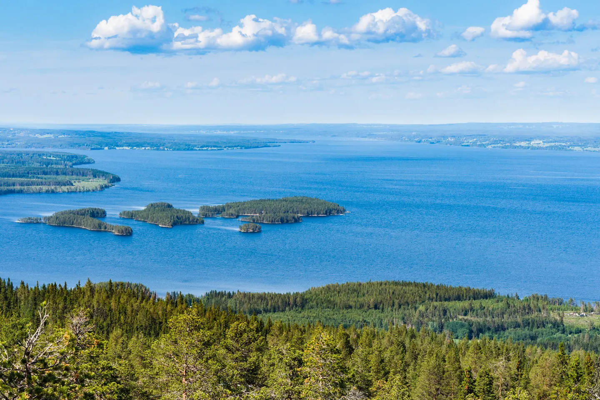
Geography and Nature
Sweden is the largest Nordic country, characterized by its vast forests covering nearly 70% of the land. It boasts over 95,000 lakes and an archipelago of 267,000+ islands. The unique law of Allemansrätten grants everyone the right to roam, camp, and forage freely across most wilderness areas.
Society and Innovation
As a constitutional monarchy and parliamentary democracy, Sweden is renowned for its high quality of life and extensive welfare system. It is a global hub for innovation, originating brands like IKEA and Spotify. The country is also a pop music powerhouse, ranking as the world’s third-largest music exporter after the US and UK.
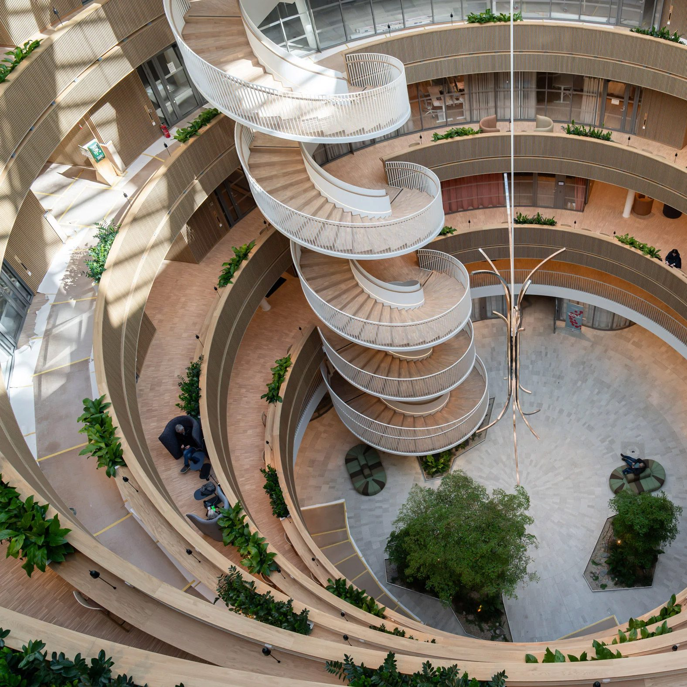
basic information
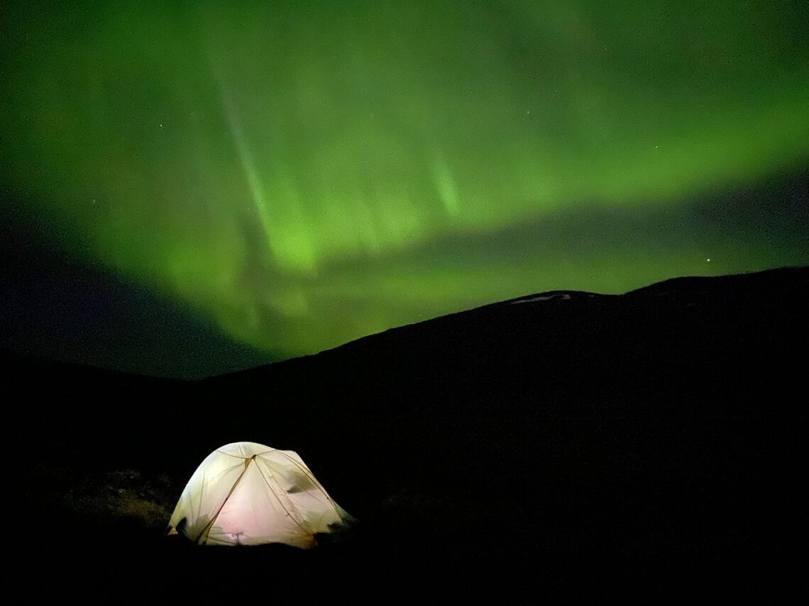
Geography and Environment
Sweden is the largest Nordic country, occupying the majority of the Scandinavian Peninsula in Northern Europe. Its diverse landscape is defined by vast boreal forests covering nearly 70% of the land and over 95,000 lakes. The rugged coastline features thousands of islands forming expansive archipelagos, while the north reaches into the Arctic Circle, home to the "Midnight Sun" and the Northern Lights. Despite its northern latitude, the climate is relatively temperate due to the warm North Atlantic Current. The unique Allemansrätten (Right of Public Access) ensures everyone can freely roam and camp across this wilderness.
Society and Governance
Sweden is a highly developed constitutional monarchy and parliamentary democracy with a population of approximately 10.6 million. It is world-renowned for its comprehensive Nordic welfare system, providing universal healthcare and education while maintaining high levels of gender equality and social trust. As a global innovation leader, it ranks among the world's most innovative nations, originating iconic brands like Spotify, IKEA, and Volvo. A major cultural and economic force, Sweden is also the world's third-largest music exporter. The country joined NATO in March 2024, further solidifying its role in international security.
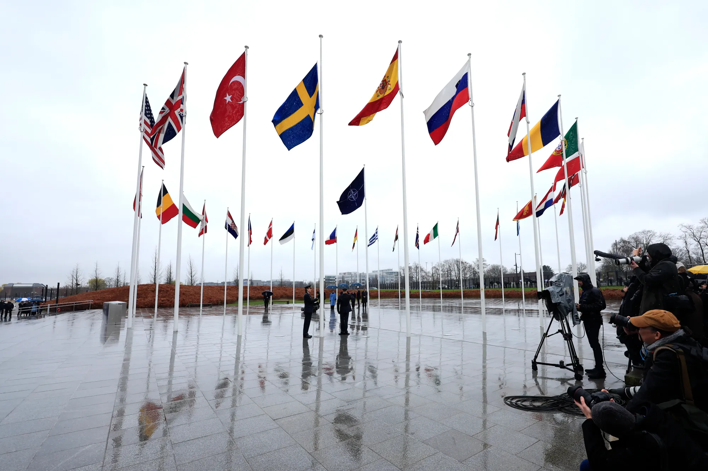
Gothenburg
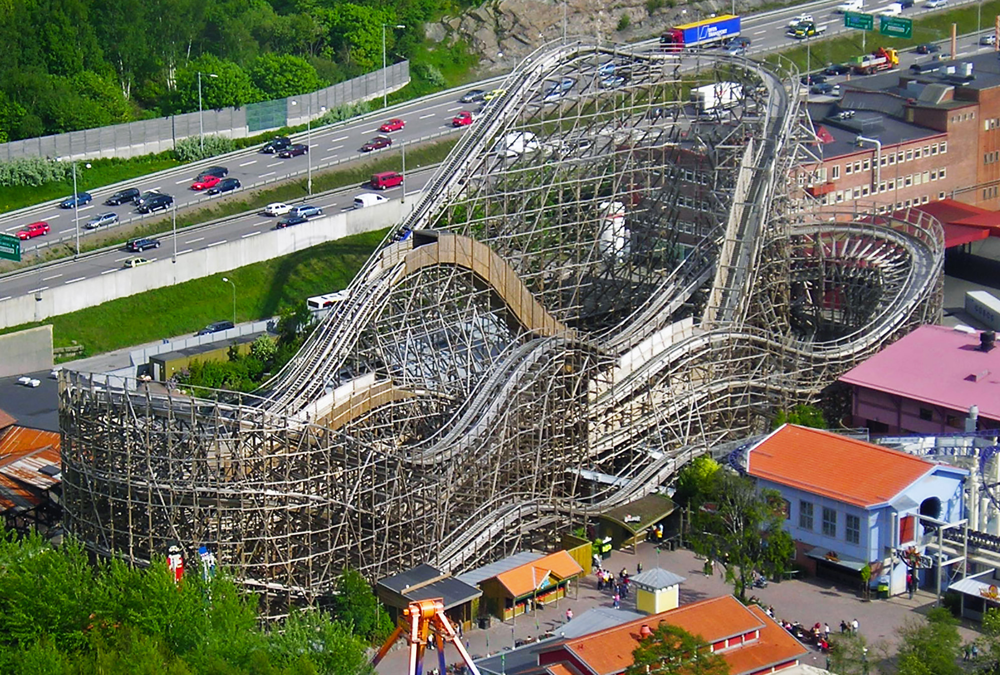
Liseberg Amusement Park
Since opening in 1923, Liseberg has become Scandinavia's largest and most beloved amusement park, attracting millions of visitors annually. It is home to award-winning rollercoasters, including the wooden Balder and the high-speed Helix. Beyond the adrenaline, the park offers a beautifully landscaped garden and a dedicated children's area called Barnens Paradis. In the winter, it transforms into a magical Christmas market illuminated by five million lights. Liseberg’s mix of seasonal festivals, live performances, and world-class rides makes it a cornerstone of Gothenburg’s cultural identity and a must-visit for all ages.
The Haga District
Haga is one of Gothenburg’s oldest neighbourhoods, renowned for its beautifully preserved 19th-century "landshövdingehus"—traditional houses with a brick ground floor and wooden upper levels. The district's main pedestrian street, Haga Nygata, is a picturesque maze of cobblestones, independent boutiques, and vintage shops. It is also the ultimate destination for "fika," the Swedish coffee break; the famous Café Husaren is located here, serving the legendary "Hagabullen," a giant cinnamon bun. Wandering through Haga offers a peaceful, old-world contrast to the city's modern bustle, capturing the true spirit of Swedish urban tradition.
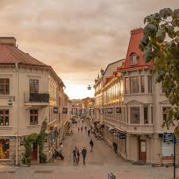
Stockholm
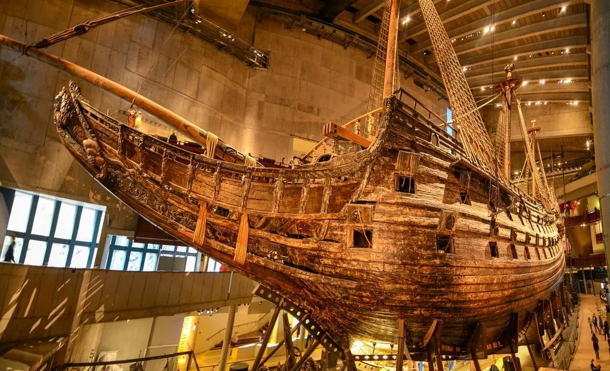
The Vasa Museum (Vasamuseet)
The Vasa Museum is home to the world’s best-preserved 17th-century warship, the Vasa, which tragically sank on its maiden voyage in 1628. After resting in the Baltic Sea for 333 years, it was salvaged in 1961 in a monumental feat of marine archaeology. Today, the ship is housed in a custom-built museum on the island of Djurgården. Visitors can admire its towering masts and over 700 intricate wooden sculptures that reflect Sweden's "Great Power" era. The museum’s ten exhibitions provide a vivid window into life at sea, naval technology, and the 17th-century craftsmanship that created this maritime masterpiece.
Gamla Stan (The Old Town)
Dating back to 1252, Gamla Stan is the atmospheric heart of Stockholm and one of Europe’s largest, best-preserved medieval city centres. This pedestrian-friendly island is a labyrinth of narrow, winding cobblestone streets lined with iconic ochre-coloured buildings and historic squares like Stortorget. At its edge stands the Royal Palace, the official residence of the Swedish King, featuring over 600 rooms and impressive Baroque architecture. Between exploring the royal apartments and visiting the Nobel Prize Museum, visitors can enjoy a traditional "fika" in basement cafés that have served locals for centuries, truly capturing the essence of historic Sweden.
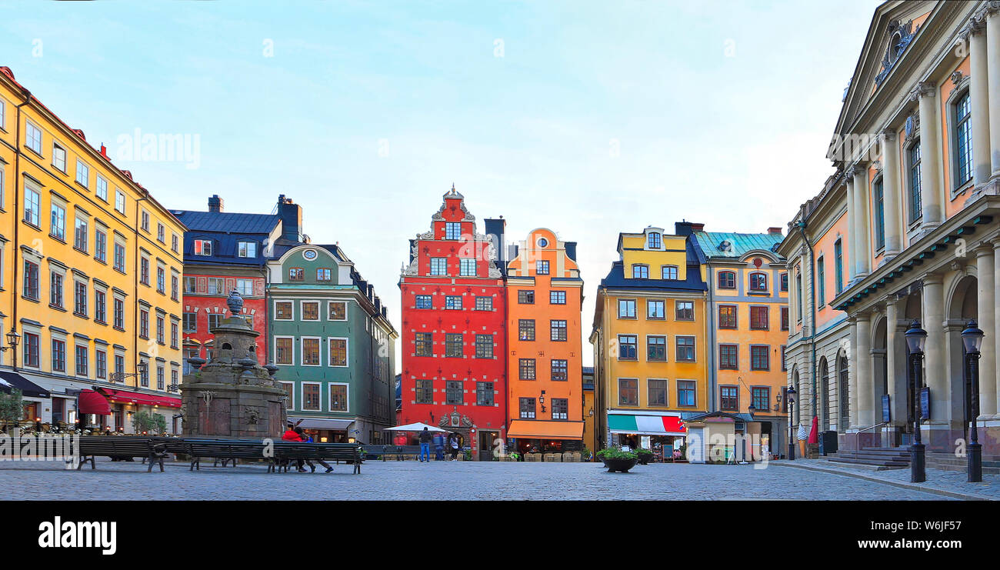
Malmö
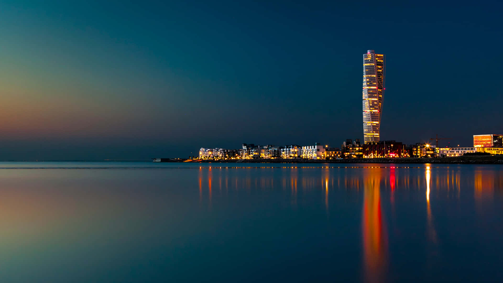
The Turning Torso
The Turning Torso is a world-renowned architectural landmark and the tallest building in Scandinavia. Designed by Santiago Calatrava, this neo-futurist residential skyscraper twists a full 90 degrees from its base to its top. Standing at 190 metres, it serves as the centrepiece of the Western Harbour (Västra Hamnen), a district celebrated for its innovative sustainable urban design. The tower’s striking silhouette has become the symbol of Malmö’s transformation from an industrial port into a modern tech and design hub, offering breathtaking views over the Öresund Strait and the bridge to Denmark.
Lilla Torg (The Little Square)
Lilla Torg is the historic heart of Malmö, a picturesque cobblestone square dating back to 1592. Enclosed by beautifully preserved half-timbered houses, it offers a vibrant, old-world atmosphere that contrasts sharply with the city’s modern districts. By day, visitors explore nearby boutique galleries and the Form/Design Center; by night, the square becomes a bustling social hub filled with outdoor cafes and restaurants. It is the ultimate spot for "fika" or a traditional Swedish meal, providing a cozy, authentic glimpse into Malmö’s medieval merchant history and thriving contemporary social scene.
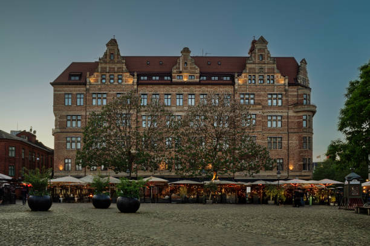
uppsala
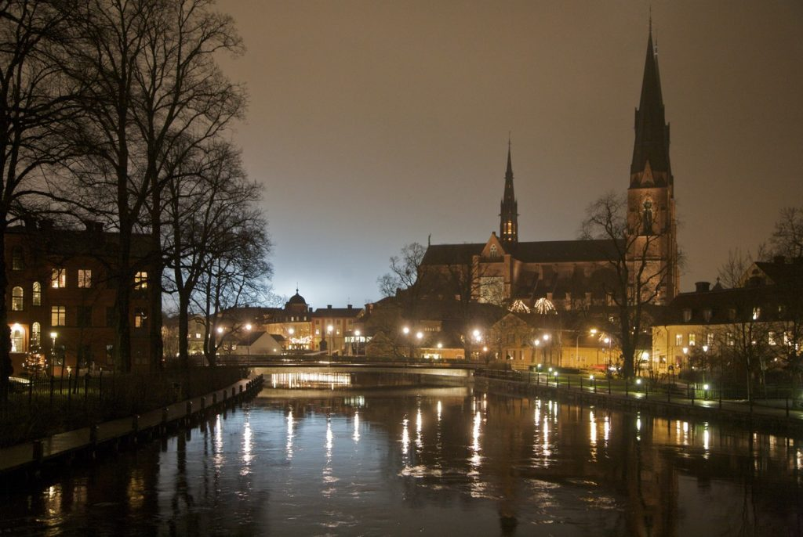
Uppsala Cathedral (Uppsala Domkyrka)
Dominating the city skyline, Uppsala Cathedral is the tallest church building in the Nordic countries, reaching a height of 118.7 metres. Constructed over nearly 175 years and consecrated in 1435, this French Gothic masterpiece has served as the coronation site for Swedish monarchs and the final resting place for kings like Gustav Vasa. Inside, the Treasury Museum houses one of Europe’s finest collections of medieval textiles. Its soaring vaulted ceilings, intricate stained glass, and the shrine of Saint Erik make it a profound symbol of Sweden’s spiritual history and architectural ambition.
Gamla Uppsala (Old Uppsala)
Located just north of the modern city, Gamla Uppsala is one of Scandinavia's most important archaeological sites. It features three massive Royal Burial Mounds dating back to the 6th century, which legend claims are the tombs of ancient Norse kings. Once the site of a pagan temple and a legendary sacrificial grove, it served as a powerful religious and political centre for the Vikings. Today, visitors can explore the on-site museum to see Viking-age artefacts or walk the historic ridges, experiencing the haunting beauty of a landscape where pagan tradition met early Christianity.